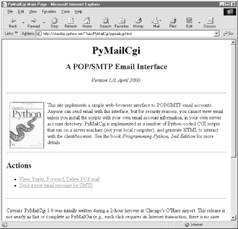

| I l@ve RuBoard |
|
13.3 The Root PageLet's start off by implementing a main page for this example. The file shown in Example 13-2 is primarily used to publish links to the Send and View functions' pages. It is coded as a static HTML file, because there is nothing to generate on the fly here. Example 13-2. PP2E\Internet\Cgi-Web\PyMailCgi\pymailcgi.html<HTML><BODY>
<TITLE>PyMailCgi Main Page</TITLE>
<H1 align=center>PyMailCgi</H1>
<H2 align=center>A POP/SMTP Email Interface</H2>
<P align=center><I>Version 1.0, April 2000</I></P>
<table><tr><td><hr>
<P>
<A href="http://rmi.net/~lutz/about-pp.html">
<IMG src="../PyErrata/ppsmall.gif" align=left
alt="[Book Cover]" border=1 hspace=10></A>
This site implements a simple web-browser interface to POP/SMTP email
accounts. Anyone can send email with this interface, but for security
reasons, you cannot view email unless you install the scripts with your
own email account information, in your own server account directory.
PyMailCgi is implemented as a number of Python-coded CGI scripts that run on
a server machine (not your local computer), and generate HTML to interact
with the client/browser. See the book <I>Programming Python, 2nd Edition</I>
for more details.</P>
<tr><td><hr>
<h2>Actions</h2>
<P><UL>
<LI><a href="onRootViewLink.cgi">View, Reply, Forward, Delete POP mail</a>
<LI><a href="onRootSendLink.cgi">Send a new email message by SMTP</a>
</UL></P>
<tr><td><hr>
<P>Caveats: PyMailCgi 1.0 was initially written during a 2-hour layover at
Chicago's O'Hare airport. This release is not nearly as fast or complete
as PyMailGui (e.g., each click requires an Internet transaction, there
is no save operation, and email is reloaded often). On the other hand,
PyMailCgi runs on any web broswer, whether you have Python (and Tk)
installed on your machine or not.
<P>Also note that if you use these scripts to read your own email, PyMailCgi
does not guarantee security for your account password, so be careful out there.
See the notes in the View action page as well as the book for more information
on security policies. Also see:
<UL>
<li>The <I>PyMailGui</I> program in the Email directory, which
implements a client-side Python+Tk email GUI
<li>The <I>pymail.py</I> program in the Email directory, which
provides a simple command-line email interface
<li>The Python imaplib module which supports the IMAP email protocol
instead of POP
<li>The upcoming openSSL support for secure transactions in the new
Python 1.6 socket module
</UL></P>
</table><hr>
<A href="http://www.python.org">
<IMG SRC="../PyErrata/PythonPoweredSmall.gif" ALIGN=left
ALT="[Python Logo]" border=0 hspace=15></A>
<A href="http://PyInternetDemos.html">More examples</A>
</BODY></HTML>
The file pymailcgi.html is the system's root page and lives in a PyMailCgi subdirectory of my web directory that is dedicated to this application (and helps keep its files separate from other examples). To access this system, point your browser to: If you do, the server will ship back a page like that shown in Figure 13-2. Figure 13-2. PyMailCgi main pageNow, before you click on the View link here expecting to read your own email, I should point out that by default, PyMailCgi allows anybody to send email from this page with the Send link (as we learned earlier, there are no passwords in SMTP). It does not, however, allow arbitrary users on the Web to read their email accounts without typing an explicit and unsafe URL or doing a bit of installation and configuration. This is on purpose, and has to do with security constraints; as we'll see later, I wrote the system such that it never associates your email username and password together without encryption. By default, then, this page is set up to read my (the author's) email account, and requires my POP password to do so. Since you probably can't guess my password (and wouldn't find my email helpful if you could), PyMailCgi is not incredibly useful as installed at this site. To use it to read your email instead, you should install the system's source code on your own server and tweak a mail configuration file that we'll see in a moment. For now, let's proceed by using the system as it is installed on my server, with my POP email account; it works the same way, regardless of which account it accesses. |
| I l@ve RuBoard |
|